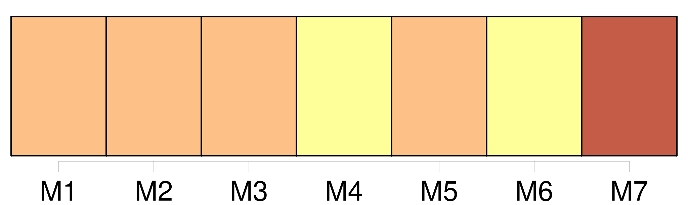

Longueur nb maillons : 46 mentions |
 |
[Un de ses domestiques] [qu’] elle employait à cette correspondance, et [qui] avait tous ses secrets, La Porte, fut arrêté, jeté dans un cachot de la Bastille, soumis aux plus terribles épreuves. Après avoir commencé par tout nier, la reine, pressée par Richelieu et par des indices irrécusables, craignant les derniers malheurs, fit de grands aveux, que nous connaissons bien aujourd’hui, et qui, tout graves qu’ ils sont déjà, ne devaient pas être complets, car s’ ils l’ eussent été, la reine n’ avait qu’ à faire dire tout simplement à [La Porte] par le chancelier Séguier, et par une lettre de sa propre main, de déclarer tout ce qu’ [il] savait, tandis qu’ elle tint une conduite bien différente. Elle considéra son salut comme suspendu à deux fils : il fallait que, selon le tour que prendrait l’ affaire, Mme de Chevreuse pût fuir ou rester ; il fallait surtout que [La Porte] , dans [ses] interrogatoires, ne dépassât pas les aveux de la reine, et aussi qu’ [il] avouât tout ce qu’ elle avait avoué, pour donner à leurs déclarations communes une parfaite vraisemblance. [La Porte intimidé] pouvait en dire trop, ou [sa] constance à tout nier pouvait inspirer des ombrages ; [la reine] craignait tout ensemble [son] énergie et [sa] faiblesse. [1 phrases] Comment arriver jusqu’ à [La Porte] , enseveli dans un cachot de la Bastille?? [20 phrases] Il s’ agissait de faire parvenir à [La Porte] une lettre cachetée où on [lui] marquait jusqu’ où [il] pouvait et [devait] aller dans [ses] déclarations. Elle remit cette lettre au chevalier en lui disant : « Voilà, monsieur, ce que la reine m’ a donné pour vous ; il faut employer votre adresse et votre crédit dans ce lieu -ci pour faire arriver cette lettre jusqu’ à [ce prisonnier] [11 phrases] Sa chambre était de quatre étages au-dessus du cachot de [La Porte] ; il perça son plancher, et fit passer la lettre de la reine au bout d’ une corde, avec prière au prisonnier de la seconde chambre d’ en faire autant, puis successivement jusqu’ à la dernière où était [La Porte] , en recommandant bien le plus profond secret. C’ est ainsi que la lettre de la reine arriva parfaitement intacte aux mains [du fidèle valet de chambre] ; chose admirable, qu’ une manœuvre si difficile, si compliquée, et qui dura plusieurs nuits, se soit accomplie sans qu’ aucun des geôliers ait pu s’ en apercevoir, et sans qu’ aucun de ceux qui y prirent part l’ ait compromise par la moindre indiscrétion, en sorte que [ce prisonnier si bien gardé] , dans un cachot et derrière des portes de fer, [reçut] une instruction détaillée qui [le] mit en état de se justifier [lui -même] et de justifier [sa] maîtresse.
La fermeté qu’ avait d’ abord montrée [La Porte] eût tourné contre la reine, si à la fin elle n’ eût été éclairée et guidée par la lettre qui parvint jusqu’ à [lui] , grâce à la courageuse industrie du chevalier de Jars, dont le dévouement était dû à celui de Mlle de Hautefort. [3 phrases] Cet événement, arrivé un peu avant les derniers interrogatoires de [La Porte] , ranima et porta à leur comble l’ irritation et les soupçons de Richelieu.
On redoubla de sévérité envers la reine ; La Rochefoucauld, que Mme de Chevreuse avait vu un moment en passant à Verteil pour lui demander des chevaux, fut mis quelques jours en prison, et on ne sait trop comment la chose aurait tourné, si [La Porte] , en ayant l’ air de céder à l’ ordre officiel que la reine [lui] envoya de tout dire, n’ eût admirablement confirmé les déclarations de [sa] maîtresse dans la mesure concertée, et par là persuadé au cardinal et au roi que toute cette affaire n’ était pas aussi importante qu’ ils l’ avaient jugé d’ abord. Est -il besoin de dire de quelle vive reconnaissance la reine fut pénétrée pour Jars, pour [La Porte] , et surtout pour sa jeune et intrépide amie, et quelles promesses elle lui fit, si jamais elle voyait de meilleurs jours?? [63 phrases] Elle s’ ensevelit dans une solitude profonde, ne recevant qu’ un très petit nombre d’ amis, entre autres [le pauvre La Porte] , [qu’] elle avait fort contribué, pendant le retour de son crédit, à tirer de la Bastille, et [qui] , exilé comme elle, [habitait] dans le voisinage. [1 phrases] [La Porte] avait vu Mme de Hautefort si intrépide, et [il] la savait si pure, si désintéressée, si bienfaisante, qu’ [il] s’ était donné à elle tout autant qu’ à la reine et bien plus qu’ à Mme de Chevreuse.
[Il] n’ était pas dupe de la feinte amitié de Mlle de Chémerault, et plus d’ une fois [il] tenta d’ éclairer Mme de Hautefort ; mais celle -ci rejetait bien loin [ses] soupçons, « ne pouvant pas seulement, dit [La Porte] , souffrir la pensée d’ un tel crime, » et elle ne fut désabusée qu’ à la mort de Richelieu, lorsque la reine lui envoya les lettres de Mlle de Chémerault, trouvées dans la cassette du cardinal. |

|
Il est possible de télécharger la ressource sur la page Ortolang |
Si vous avez des questions ou vous voyez des erreurs, merci d'envoyer un mail à silvia.federzoni89@gmail.com |